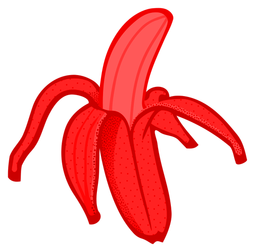

| Artriche |
|  |
| Type |
| Fruit |
Artriche
Een artriche (uitspraak ar-tries-je) is een vrucht die op Phantasar voorkomt. Ze worden meestal niet op veel plekken gevonden. Qua uiterlijk lijken het "rode bananen" te zijn.
De smaak van artriches staat bekend als extreem zoet. Zo zoet dat zelfs de grootste zoetekauw ter wereld er nog van over zijn/haar nek gaat. Ze zijn wel extreem calorierijk en worden vooral aanbevolen aan personen die erg veel inspanningen hebben moeten leveren of die op enige wijze aan ondervoeding dreigen te leiden.
Trivia
- De naam "artriche" heeft eigenlijk geen echte etymologie. Het woord viel me gewoon in, het klonk lekker en als iets wat aan een vrucht gerelateerd kon worden, dus de naam bleef.
- Het idee van rode bananen viel me ooit als kind een keer in en ik kan me eigenlijk niet meer herinneren hoe 't bij me opkwam. Toen mijn werk als fantasy schrijver echt serieuze vormen aannam was het wel mijn bedoeling dit concept ooit in een verhaal te proppen. Bij "De Vleugels Des Oorlogs" gebeurt het dan eindelijk.
- Rode bananen schijnen echt te bestaan. Hier kwam ik pas achter toen het manuscript voor "De Vleugels Des Oorlogs", waarin ze hun debuut maakten, al af had. Dit wist ik dus niet dus kan ik zeggen dat iedere gelijknis tussen een artriche en een rode banaan dus volledig op toeval berust. Rode bananen zijn ook iets kleiner dan "gewone bananen" terwijl artriches dezelfde maat hebben. Rode bananen zijn aan de binnenkant gewoon geel, terwijl artriches van binnen roze zijn. Artriches zijn ook velen malen zoeter.